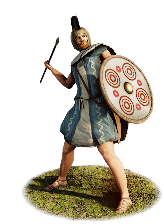
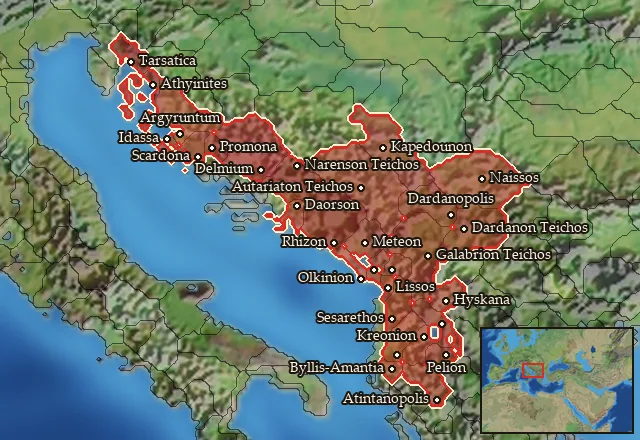

RTR: Imperium Surrectum
RTR: Imperium SurrectumSouthern Illyrian Skirmishers


Class: missile · Category: infantry · Men per unit: 40
Description
Southern Illyrian Skirmishers are simple pastoralists and farmers, who fight for their clans and the armies of Illyrian chieftains and kings. They wear no armour aside from a solid bronze Illyrian helmet, and their round wooden shields, often further reinforced with a metal boss in the middle, or animal hide. Otherwise, these men wear simple tunics and cloaks to protect them from the elements. They use javelins at range, and short curved pecine knives up close, so are best used to flank rather than fight in the main line of battle.
Historical background
Southern Illyrian Skirmishers were generally called into war by their local leaders, and did the most menial work on campaign, as camp followers, porters, and labourers. While little is truly known about Illyrian society in general in our period, some things can be inferred using pattern recognition. Whilst initial Illyrian society may have been primarily pastoral and based on following strong men, over time this hierarchy evolved from clan groupings to tribes, then federations of tribes with their own aristocracy (Hammond, Illyrians and North-West Greeks (1994), p. 428). Their communities were based on families concentrated around the few fertile plains of the Dinaric karst or within river valleys. They maintained trade and communications through mountain passes, and founded small settlements and hillforts at strategic or economically vital locations. Their world was often fragmented, held together by blood ties, perhaps with a level of tribal loyalty too (Dzino, Contesting Identities of pre-Roman Illyricum (2012), pp. 73-4).
As time went on and trade increased over an ever-wider network, the Southern Illyrians were influenced by other groups such as the Greeks, and influenced them in turn. Yet, despite some cases of urbanisation, many Illyrians clung to their old ways of raising sheep and goats on the rich pastures and coastal plains of the Adriatic (Hammond (1994), p. 429). Rather than creating a society based on cities, they maintained closely knit networks of kin and clients, presenting a rather different or “other” society to the Greeks and Romans (Dzino and Kunic, Pannonians Identity-perceptions from the late Iron Age to later Antiquity (2012), p. 98). This lack of centralisation meant the Romans had to manufacture an Illyrian identity as a one-size-fits-all approach for the peoples that lived there. They also had to create systems of taxation and administration once they began to Romanise their provinces of Illyricum and Pannonia, thus highlighting how alien the Illyrian social system was to foreign civilisations (Dzino and Kunic (2012), p. 100).
Southern Illyrian Skirmishers are herders, shepherds, and hunters, so wear simple woollen capes and tunics to war, protected by just a light wooden shield and an Illyrian helmet. An Iapodian cremation urn from Ribic near Bihac inspired this design as it portrays an Illyrian with a tunic and a heavy cloak in the Roman sagum style, fastened with a metal clasp at the shoulder (Wilkes, The Illyrians (1996), pp. 227-8). They use the Illyrian helmet, which was an evolution of the iconic Greek Corinthian helmet, and is found frequently throughout Illyria. It is fairly suitable for skirmishers, as although it may impair hearing by covering the ears, the eyes are provided with a good field of view due to the rectangular face opening (Stefanovski, Warfare In Archaic Macedonia (2023), p. 82). These hardy warriors are noted for their endurance in the tough mountainous terrain of Illyria, and were well-practiced with their javelins. After all, Illyria was a fractious place with competition for land, resources, and herds (Dzino (2012), p. 83).
Stats
| Rank in roster | Rank in roster | Rank in roster | Rank in roster | ||||||||
|---|---|---|---|---|---|---|---|---|---|---|---|
| Men per unit | 40 | ███······· 31% | Attack | 11 | ████······ 44% | Charge bonus | 3 | ██········ 16% | Defence | 19 | ██········ 18% |
| · armour | 3 | ██········ 22% | · defence skill | 13 | █········· 14% | · shield | 3 | ████······ 38% | Morale | 6 | █········· 6% |
| Discipline | Low | Training | Untrained | Recruitment cost | 1,020 dn | █········· 5% | Upkeep per turn | 373 dn | █········· 12% | ||
| Turns to recruit | 2 |
Weapons
| Primary | Secondary | Primary | Secondary | Primary | Secondary | Primary | Secondary | ||||
|---|---|---|---|---|---|---|---|---|---|---|---|
| Attack | 11 | 4 | Charge bonus | 3 | 3 | Type | thrown · archery | melee · simple | Damage | piercing | piercing |
| Projectile | javelin | — | Range | 50 | — | Ammunition | 6 | — | Properties | Thrown | — |
Defence
| Primary | Secondary | Primary | Secondary | Primary | Secondary | Primary | Secondary | ||||
|---|---|---|---|---|---|---|---|---|---|---|---|
| Total | 19 | — | Armour | 3 | — | Defence skill | 13 | — | Shield | 3 | — |
Condition and terrain
| Hit points | 1 | Ground: scrub / sand / forest / snow | 8 / 0 / 8 / 0 | Charge distance | 30 | Formations | Square |
Technical stats
| Time between blows (primary / secondary) | 2.5 s / 2.5 s | Extra fatigue in hot climates | 0 | Collision mass per man (1.0 is normal) | 0.87 | Spacing between men: close / loose | 1.2 × 2.8 m / 2.16 × 5.04 m |
| Default ranks | 5 |
In battle: Can hide in long grass · Very good stamina
Who can recruit it
A core roster unit for 6 factions, each able to raise it anywhere they hold the right building:
Ardiaei · Dardania · Delmatae · Illyrian Kingdom · Labeatae · Liburni
Any faction holding one of the provinces below can field it.
Exactly what a settlement must have, route by route (5)
| Building | Also requires | Building | Also requires | Building | Also requires | Building | Also requires |
|---|---|---|---|---|---|---|---|
| Any settlement | Tier 2 Military Industrial Complex · Southern Illyrian area of recruitment · not Labeataean area of recruitment · Any Government (Dependency, Indirect Rule or Direct Rule) · Tier 2 Colony not built | Indirect Rule | Tier 2 Military Industrial Complex · Tier 1 Colony | Direct Rule | Tier 2 Military Industrial Complex · Tier 1 Colony | Homeland | Tier 2 Military Industrial Complex |
| Any settlement | Tier 2 Military Industrial Complex · Southern Illyrian area of recruitment · not Labeataean area of recruitment · Dependency or Indirect Rule · Tier 1 Colony not built |
Areas of recruitment

| Zone | Provinces | ||||||
|---|---|---|---|---|---|---|---|
| Southern illyrian | 29 |